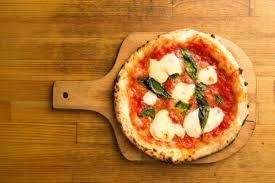

Italian isoimmat kaupungit järjestyksessä
- Rooma
- Milano
- Napoli
| Väkiluku | Italian väkiluku on tarkistettu viimeksi vuonna 2017 mikä on 60,59 miljoonaa |
| Urheilu | Italian suosituin urheilulaji on jalkapallo. Maassa on järjestetty lajin maailmanmestaruuskilpailut vuosina 1934 ja 1990 sekä Euroopan mestaruuskilpailut vuosina 1968 ja 1980. Italian jalkapallomaajoukkue lukeutuu maailman menestyksekkäimpiin. |
| Kuuluisat ruoat | Kaksi italialaista ruokalajia on levinnyt kaikkialle maailmaan: pasta ja pizza. Jo muinaiset kreikkalaiset ja foinikialaiset paistoivat litteitä, yrteillä päällystettyjä leipiä kuumien kivien päällä. |
| Alueet | Aostanlaakso, Friuli-Venezia, Sardinia, Sisilia ja Trentino-Etelä-Tiroli. |